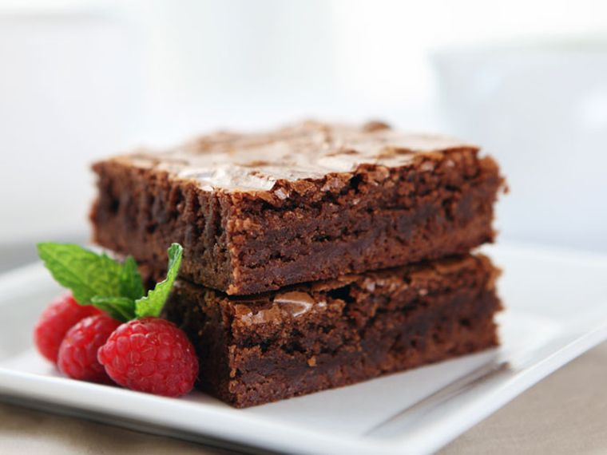

Brownie Intenso

Ingredientes:
- 230 gr Chocolate Extrafino 70% Cacao AGUILA
- 170 gr manteca
- 250 gr azúcar
- 3 huevos
- 1 yema
- 95 gr harina 0000
- 100 gr nueces picadas
- Dulce de leche
Paso a Paso:
- Picar el chocolate. Colocar en un bowl metálico junto con la manteca y fundir a baño maría.
- Retirar del baño maría; añadir el azúcar, los huevos y la yema. Mezclar.
- Agregar la harina previamente tamizada. Luego las nueces.
- Verter la preparación en una placa rectangular de 21 x 17 cm, enmantecada y con papel manteca.
- Cocinar en el horno a temperatura media por aproximadamente 15 minutos.
- Una vez cocidos, dejar enfriar a temperatura ambiente.
- Cortar en cuadrados y servir.
Video de Preparación: